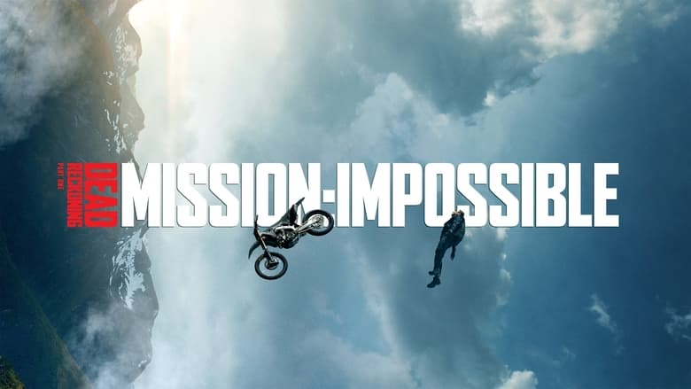
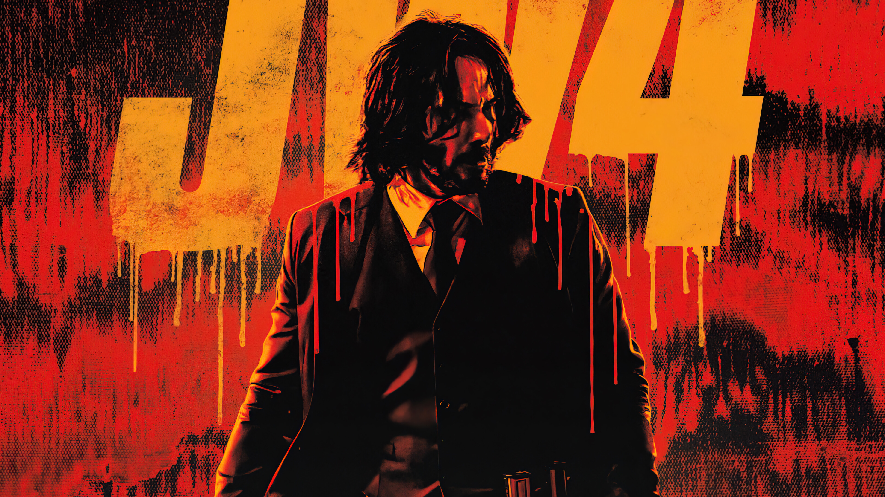
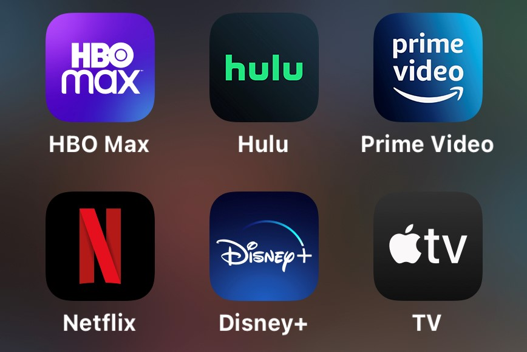
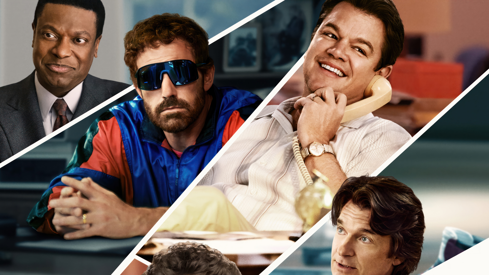

Upcoming Movie Releases
1. Mission: Impossible - Dead Reckoning Part One

Release Date: July 12, 2023 Genre: Action, Adventure
In 'Mission: Impossible - Dead Reckoning Part One,' Ethan Hunt and his IMF team confront their most perilous assignment to date. Their objective is to dismantle 'The Syndicate,' an unyielding organization, and thwart its worldwide menace to peace. With espionage of paramount importance, exhilarating stunts, and gripping action, Ethan and his team engage in a race against the clock to unveil the truth and safeguard the world. Brace yourself for an electrifying and pulse-pounding escapade that will keep you on the edge of your seat.
Box Office Updates
John Wick 4

Box Office Numbers: $350 million
John Wick 4 has grossed $160 million domestically, and nearly $190 million from overseas territories, for a global haul of exactly $350 million.
Casting and Production News
Tu Jhoothi Main Makkaar

Producer: Luv Ranjan | Ankur Garg
Cast: Ranbir Kapoor | Shraddha Kapoor
The movie was initially announced as an unnamed romantic comedy on December 20, 2019. The original release date was scheduled for March 26, 2021. However, due to the impact of the COVID-19 pandemic, the release date was rescheduled to March 18, 2022. Further delays in filming resulted in another shift of the release date to January 26, 2023, coinciding with India's Republic Day. Finally, the definitive release date was set as March 8, 2023, aligning with the festive occasion of Holi.
Awards and Film Festivals
95th Academy Awards - 2023

Winner: Best Picture - Everything Everywhere All at Once
The 95th Academy Awards recognized Everything Everywhere All at Once as the Best Picture.
Trailers and Teasers
The Mother

A skilled assassin emerges from hiding to safeguard her long-lost daughter when pursued by dangerous enemies.
Watch Trailer
Film Industry Trends
Streaming and on-demand platforms on the rise

The film industry has been greatly influenced by the emergence of popular streaming services such as Netflix, Amazon Prime, Disney+, and HBO Max. These platforms have had a significant impact as they offer convenience, affordability, and a wide range of original content. Additionally, the COVID-19 pandemic has accelerated the growing preference for streaming services over traditional theater experiences.
Interviews and Q&A Sessions
Director Spotlight: Christopher Nolan

When asked about his upcoming movie "OPPENHEIMER", Christopher Nolan says "I think recreating the Trinity test [the first nuclear weapon detonation, in New Mexico] without the use of computer graphics, was a huge challenge to take on." He adds "Andrew Jackson - my visual effects supervisor, I got him on board early on - was looking at how we could do a lot of the visual elements of the film practically, from representing quantum dynamics and quantum physics to the Trinity test itself, to recreating, with my team, Los Alamos up on a mesa in New Mexico in extraordinary weather, a lot of which was needed for the film, in terms of the very harsh conditions out there - there were huge practical challenges."
Some Recent Film Reviews
1. Guardians of the Galaxy Vol. 3 (2023)
.jpg)
Rating: 8.3/10
Still reeling from the loss of Gamora, Peter Quill rallies his team to defend the universe and one of their own - a mission that could mean the end of the Guardians if not successful.
2. Evil Dead Rise (2023)

Rating: 6.8/10
A twisted tale of two estranged sisters whose reunion is cut short by the rise of flesh-possessing demons, thrusting them into a primal battle for survival as they face the most nightmarish version of family imaginable.
3. Air (2023)

Rating: 7.5/10
Follows the history of shoe salesman Sonny Vaccaro, and how he led Nike in its pursuit of the greatest athlete in the history of basketball, Michael Jordan.